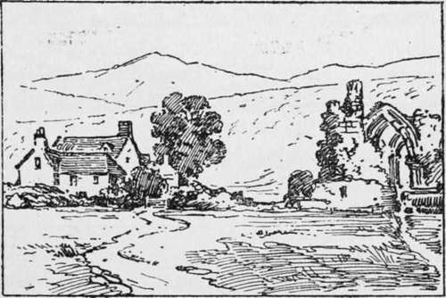

Pictorial Photography. Part 2
Description
This section is from the book "The Barnet Book Of Photography", by Herts Barnet. Also available from Amazon: The Barnet Book Of Photography.
Pictorial Photography. Part 2
If, then, one should criticise your picture and should disapprove, it is no excuse for you to urge that it was like that in Nature, because, if at the particular time and from that particular standpoint Nature was not suitable, the scene in question should have been left alone until a more propitious moment, or for some other subject more complying. " Oh, but," say you, " I particularly wanted to photograph that scene." Very well, do so ; but your photograph will be of topographical value—that is, it will depend purely on the intrinsic interest of the objects included or the locality, whereas the merit of a picture has nothing whatever to do with such particular interest, but is satisfactory in proportion to its general pleasing effect and its power of appealing to the imagination.
Composition, then, will form our first subject for consideration ; but before proceeding let me try and explain the second statement, that, even though the selected scene be well composed, a mere copy of Nature does not necessarily constitute a good picture.
To begin with, Nature is one thing and Art the expression of the way in which Nature affects us is another. Hence from the same subject we get several quite different pictures by different men, alike in form perhaps, yet each differing in bringing out some particular feature more strongly than others. Hence each man's picture bears a stamp of personality, like his autograph, and makes you feel just as he felt about it. A picture in the proper sense is not just an inventory of all the things in the field of view at the time, but using those things in a particular way so as to stir up your imagination, so that you hear the rustling of the breeze in the trees or the bubbling of the brook; in imagination you feel the warm sunshine and soft winds, as well as see the mere representation of the one or the influence of the other; and, mark you, this hearing and feeling is not conjured up by mental effort; you do not say to yourself, the trees are bent, therefore the wind must have been blowing, or there is a light patch showing where the sun was shining, therefore it must have been warm; but instantly, and without reflection, the imagination responds to the representation, and the emotions are quickened just as music may suddenly thrill one without his seeking or asking why. So, then, after Compositon, we shall have to consider Imagination. And if you ask how is it possible to do this, I would remind you that art is artificial; there are certain methods and rules which by observing at first will help you. Anon you will resort to your own methods, and lay down rules for yourself just as we all learn to write with pot-hooks and hangers, and when we have mastered the copy-book pattern straightway adopt our own way of making letters, and the pot-hooks and hangers of pictorial photography we may call Construction, and this will form our third heading.
The general principles of pictorial art are as old as civilisation; they are not arbitrarily laid down by any particular set of teachers, rather have they been evolved out of the experience of all artists, and whatsoever process or means—pencil, camera, etching-needle or brush—be applied to pictorial or artistic expression, these same principles obtain.
Composition Or Selection Of Subject
The two terms used above are in photography nearly one and the same thing, because we can to so limited an extent compose or build up our subject; we therefore select it because it does compose well, and select a particular view point, because from that it composes better than from another.
Composition may be described as a certain symmetry of design or arrangement which the human senses demand for aesthetic enjoyment.
Curiously enough, we obey certain innate laws of composition in nearly everything we do in life. You put your clock in the middle of the shelf and ornaments on either side to balance. Placing a chief thing in the middle and the others grouped around in orderly fashion prevails in most cases, except when we deliberately depart therefrom for the sake of variety. You place your studs in the middle, and fasten your clothes, so following the same plan of symmetry on which our faces and bodies and indeed all Nature is planned, and that is the crude and primitive foundation of composition. If we draw a design or a representation of some particular thing, we instinctively set it in or near the middle of our paper, so much so that if in a picture or design the chief object were not near the centre, we should at once wonder why and seek if the paper were large enough to make it the centre of a new grouping; and this is the reason why gratifying or satisfying composition, such as the centrality of the chief object, is necessary in an artistic work— namely, that our sense shall be so appeased as to leave the feeling and imagination entirely undisturbed to respond to its appeal. Thus, an artist sketches in a cottage or perhaps part of a cottage, a tree or a portion of the road, a head and shoulders and leaves the rest lest other matters should distract the attention from the particular item which it is intended shall appeal to the emotions and imagination, yet just sufficient other details are put in or suggested as shall avoid the work possessing an incomplete effect.
The photographer is not so free as the artist, but, prompted by the same motive, he first in selecting his point of view naturally focuses his attention around the chief object, and so chooses it that other items which he must perforce fully include do not disturb the chief interest. Let us see how this is exemplified in the accompanying three sketches, which, let us suppose, represent photographs.
In Fig. 1 we have an example of what the photographer so often does. He finds that his lens will include both the ruined abbey and the farm-house, and both can be done with no additional labour, and thus with an extravagance which costs him nothing he spends the material for two pictures on only one.
Fig. 1.
Continue to:
Tags
paper, print, negative, exposure, lens, development, camera, focus